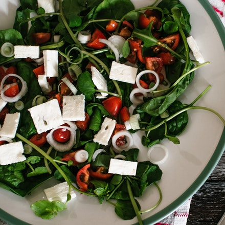
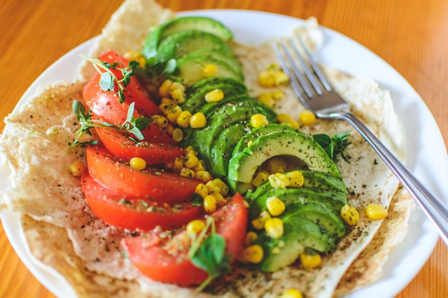
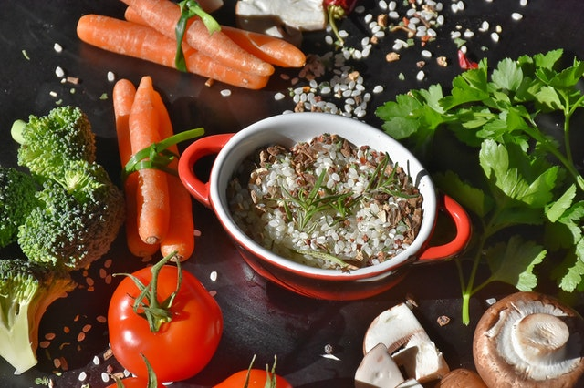

coma bem
viva melhor
Você já parou para pensar que se você não se alimentar bem, mais cedo ou mais tarde desencadeará doenças? O alimento pode prevenir, ajudar a curar ou pode também desencadeá-las. É necessário conscientização quando o assunto é alimentação.
Saiba Maiscoma seus
vegetais
Os vegetais são uma excelente fonte de fibra, o que é bom para a digestão saudável. Eles também ajudam na redução de seu colesterol. E com certeza, vai lhe auxiliar na perda de peso.
Saiba Maisboa comida
bom humor
O brócolis, o tomate e o espinafre são bons exemplos de como a alimentação pode estimular o bom humor. Isso porque esses alimentos são ricos em ácido fólico, ou vitamina B9, necessário para a formação de proteínas.
Saiba Mais


